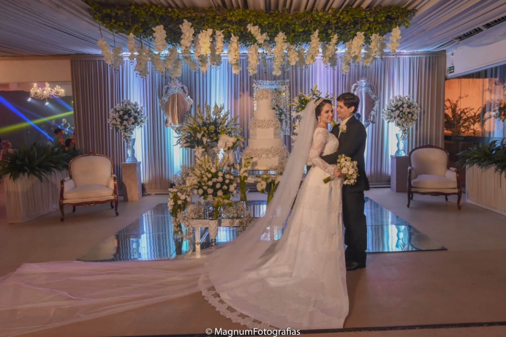
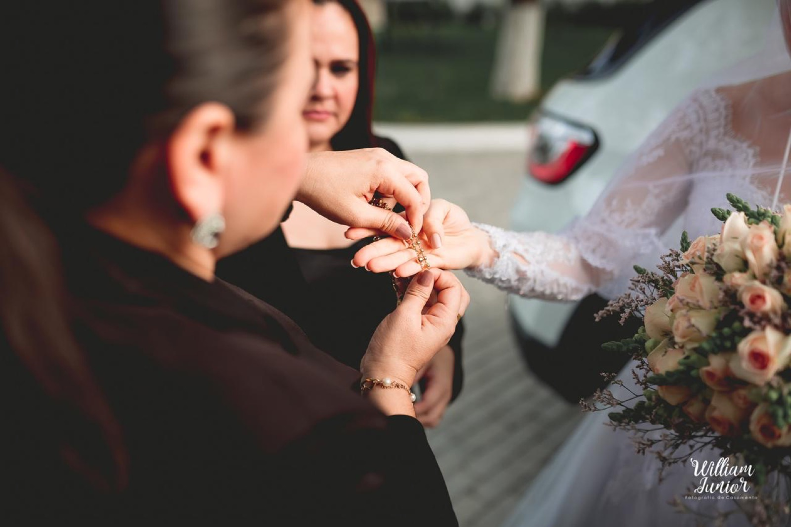
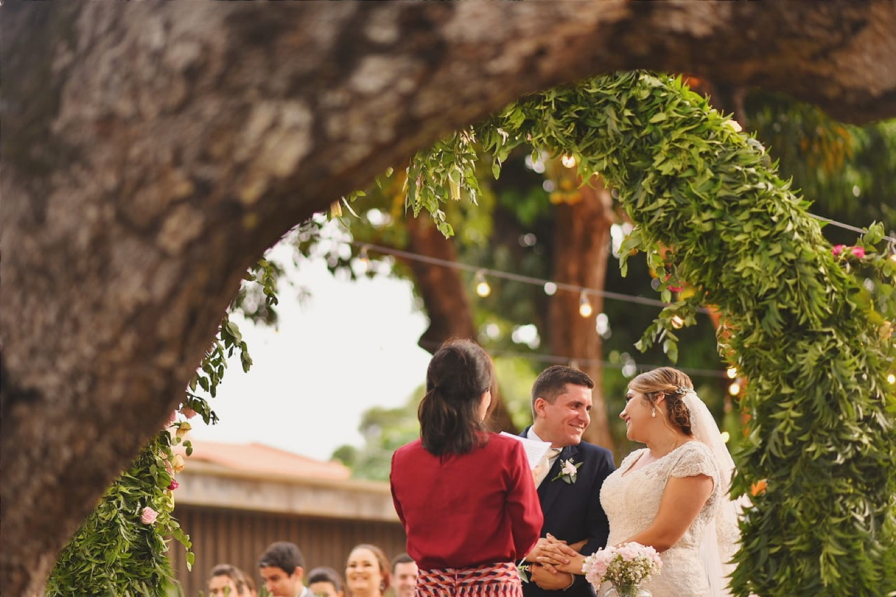
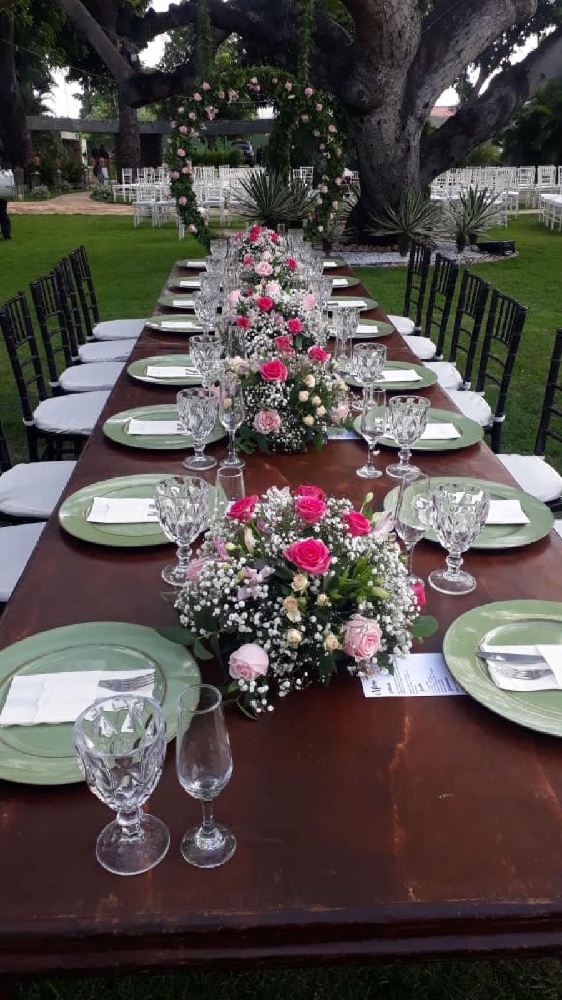
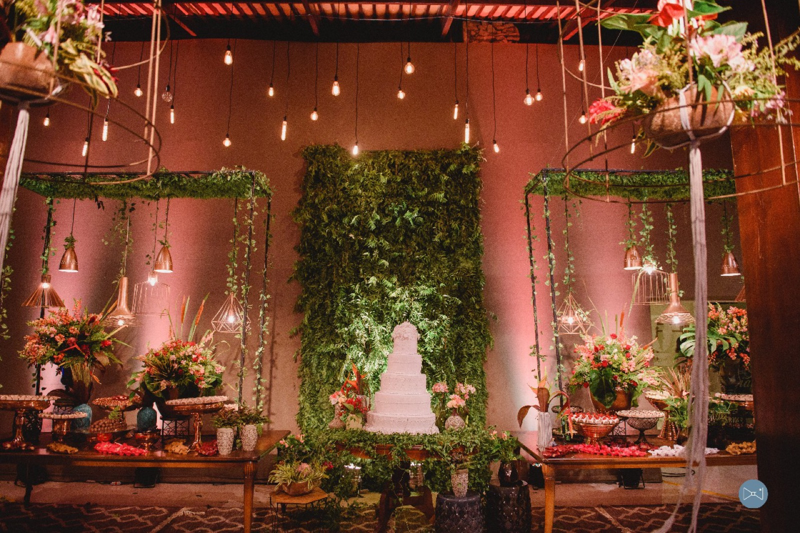
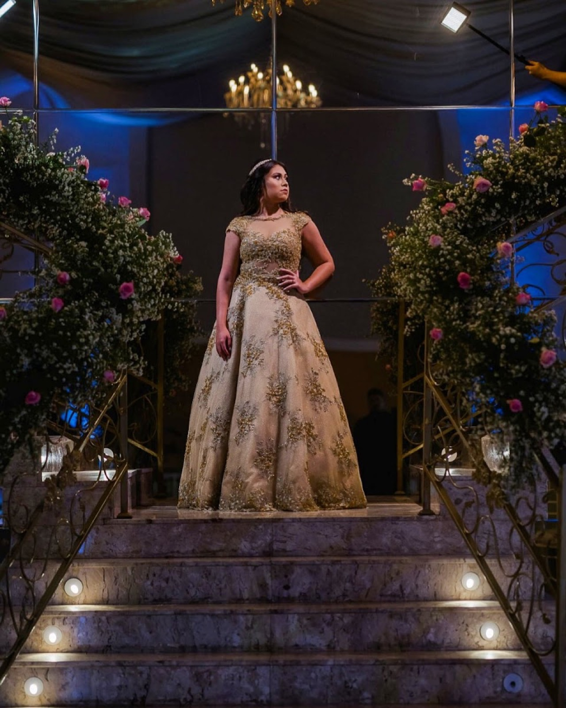
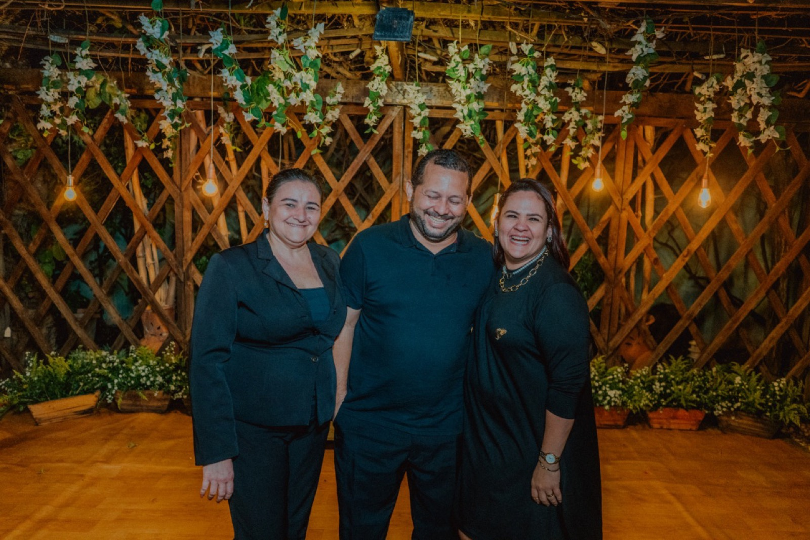

Cerimonial para casamentos, 15 anos e celebrações que pedem elegância, do planejamento ao último brinde.
Por trás de uma festa impecável existe um roteiro pensado com antecedência, fornecedores afinados e uma equipe atenta a cada minuto.
O Cerimonial Com Requinte cuida dessa parte invisível, para que vocês vivam o dia com calma e os convidados só lembrem da beleza.


Entradas no tempo certo, música no compasso, família posicionada. Na cerimônia, cada segundo conta, e o cerimonial está lá para que nada saia do lugar.
Mesa, flores, luz e cenário trabalhando juntos. Alguns momentos de eventos acompanhados pela equipe.




Uma empresa de empreendedoras que acolhe cada casal e cada família como são. Aqui, o seu jeito de celebrar é o ponto de partida.
Cinco perguntas rápidas e você recebe um resumo com cronograma sugerido. No final, suas respostas vão organizadas direto para o WhatsApp do cerimonial.
Conte a data, o tipo de evento e o estilo que vocês imaginam. A equipe responde pelo WhatsApp e marca um horário.